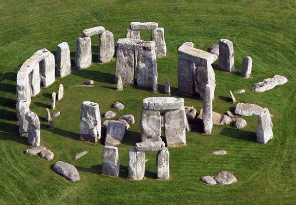
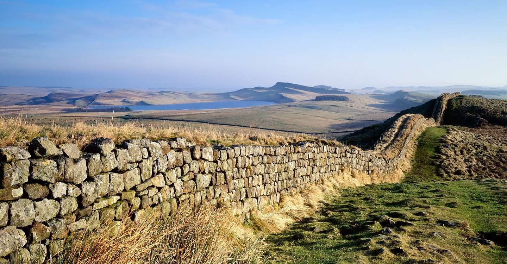

These are some of the most famous landmarks in England.
To find out more about the landmarks, click on the images.
Stonehenge
Stonehenge is the most famous prehistoric monument in Britain. It is a circle of stones.
People began building Stonehenge about 5,000 years ago, dragging each stone into place.
Stonehenge is situated on Salisbury Plain in the county of Wiltshire.
Windsor Castle

Windsor Castle has been a royal residence for over 900 years and today is one of the
homes of Queen Elizabeth ll. The royal standard flies from the round tower
of the Castle when the Queen is in residence.
Windsor Castle has dominated the river Thames for over 900 years. It was built by the Normans
from timber and later rebuilt in stone.
Hadrian's Wall
Hadrian's Wall, a stone wall barrier built to separate the Romans and the Picts tribes
in Scotland 2000 years ago. It allowed Roman soldiers to control the movements of people coming into or leaving Roman Britain. It was so well built that you can still see parts of it today.